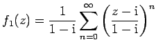
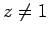

Inhalt Index DeskTop Bronstein

 Funktionentheorie Potenzreihenentwicklung analytischer Funktionen
Funktionentheorie Potenzreihenentwicklung analytischer Funktionen


Es wird der Fall betrachtet, daß die Konvergenzkreise K0 um z0 und K1 um z1 zweier Potenzreihen
| (14.49a) |
ein gewisses Gebiet gemeinsam haben (s. Abbildung) und daß in diesem gilt
Dann sind die beiden Potenzreihen die zu den Punkten z0 und z1 gehörenden TAYLOR-Entwicklungen ein- und derselben analytischen Funktion  . Die Funktion f1(z) heißt analytische Fortsetzung der nur in K0 definierten Funktion f0(z) in das Gebiet K1 hinein.
. Die Funktion f1(z) heißt analytische Fortsetzung der nur in K0 definierten Funktion f0(z) in das Gebiet K1 hinein.
| Beispiel |
|
Die geometrischen Reihen mit dem Konvergenzkreis um z0 = 0 und  mit dem Konvergenzkreis um haben jede in ihrem Konvergenzkreis und in dem gemeisamen (in der Abbildung doppelt schraffierten) Konvergenzgebiet dieselbe für  analytische Funktion f(z)=1/(1-z) als Summe. Daher ist f1(z) analytische Fortsetzung von f0(z) aus K0 in K1 hinein (und umgekehrt). |